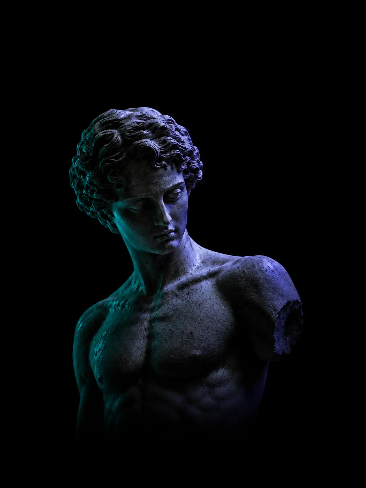
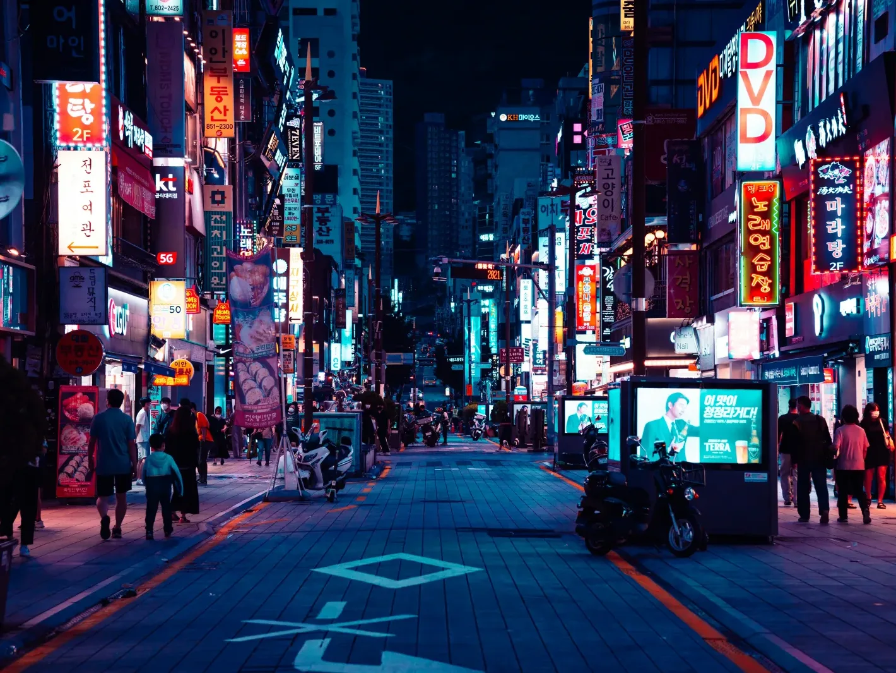

Pixel-sorting: scan each line of an image for runs brighter than a threshold and reorders them by luminance — a familiar picture breaking along its own light, then resolving again.

VFX-JS is a small JavaScript library for adding WebGL effects to an ordinary web page. You point it at a DOM node — an image, a video, a line of text — and it lends that element's pixels to a fragment shader for the length of a frame.
It builds on Three.js for the GL plumbing, so you write shaders instead of boilerplate. A single vfx.add(element, { shader }) call is most of the surface: the library captures the element as a texture, runs your GLSL over it on the GPU, and paints the result back in place.
Nothing is thrown away to do it. The original markup stays live beneath the canvas — text remains selectable, links remain clickable — and the effect is a layer over the page rather than a replacement for it.
Effects compose. The @vfx-js/effects package ships ready-made passes — bloom, pixelate, glitch and more — that chain together, while @vfx-js/react wraps the same engine in components for React projects.
What you are scrolling through is one such effect, written as a custom shader: a pixel sort. It scans each column for pixels above a brightness threshold and reorders that run by luminance, so a still image breaks along its own light and then resolves again.
The threshold is just a uniform. Slide it from one down to zero and the sort dissolves from a fully scrambled frame back to the untouched image — which is exactly the motion the scroll timeline on this page drives, section by section.
Set in IBM Plex Mono and UnifrakturMaguntia. Built on Three.js, released under the MIT license, and small enough to drop into any page that wants a little controlled disorder.
